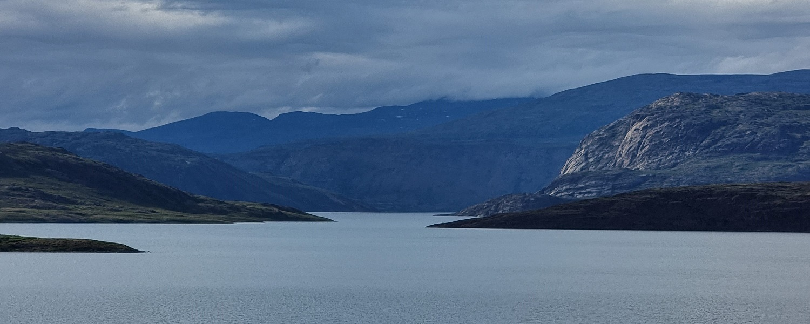

Livet er som bekendt en lang læringsproces, der kræver kærlighed, vedholdenhed, nænsomhed og tålmodighed
blandet med viljen til at handle, og i disse processer er der ikke en eneste af os, der kan gøre alting
selv.
Når livet byder på udfordringer, kan det gøre gevaldigt ondt, og uanset om vi har mistet modet og
føler os helt på herrens mark eller går på med krum hals, så er vi alle nødt til at få hjælp en gang
imellem.
Det er nemlig ikke altid så let at være sit eget autentiske selv eller at mærke, hvad hjertet længes efter.
Kroppen er vores redskab til alt det, vi længes efter, for det er gennem den, vi erfarer og lever
livet. Det er her, sandheden mærkes - både når vi er pressede, og når vi har det godt. Forskningen har for
længst slået fast, at psykiske sår sætter sig fysisk. Derfor kan ar på sjælen sjældent blot tales væk; de
skal
mærkes nænsomt for at kunne slippes.
Ved at inddrage alle tre lag - krop, følelser og ånd - hjælper jeg dig med at blive bevidst om de mønstre,
der
holder dig fast. Jeg støtter dig i rejsen fra hjernen til hjertet, så du får modet til at flytte dig bevidst
og mærke dine sande længsler og ønsker - og handle på dem.
Tillid er en sårbar størrelse, som kan være svær at bevare gennem et helt liv. Vi oplever alle
modgang, der slår revner i vores tillid og lærer os at lukke hjertet for at beskytte os mod fremtidig
smerte.
For at genvinde tilliden - både til verden og til vores egen evne til at håndtere livets udfordringer - må
vi
skabe bevidsthed i alle vores lag samtidigt: i kroppen, psyken og ånden. Derfor er en central del af
terapien,
at vi sammen øver os i at genkende de øjeblikke, hvor du instinktivt lukker ned, og sammen undersøger, hvad
der skal til for, at du igen tør åbne hjertet. Jeg hjælper dig med at finde tilbage til din kerne, så du kan
lære at stå sikkert i dit eget lys og din egen styrke.

I terapien arbejder vi med alt det, det indebærer at være menneske - fra de praktiske erfaringer og egoets forsvarsmekanismer til sjælens længsler. Min fornemmeste opgave er at hjælpe dig med at tage ejerskab over dit eget liv.

En session hos mig er et trygt rum, hvor der er plads til hele dig. Vi mødes enten ved fysisk fremmøde eller online via videoopkald - begge former fungerer lige godt for det terapeutiske arbejde.
I begyndelsen fokuserer vi naturligt på samtalen. Her skaber vi sammen det overblik, der gør, at du føler dig tryg og sikker i at formulere, hvad du ønsker at få ud af dit forløb. Vi kigger på din fortid og din nutid for at få indsigt i de mønstre, du ofte lander i, og for at forstå, hvad der tynger dig eller holder dig tilbage.
Når fundamentet er lagt, begynder vi at bevæge os dybere ind i alle tre lag: Krop, følelser og sjælens længsler. Du skal ikke gøre noget bestemt eller præstere noget specifikt. Det hele folder sig ud undervejs i dit tempo og sådan som det føles bedst for dig. Det vigtigste er, at du lærer at mærke alle dine lag i forening, så du kan stå stærkt, frit og autentisk i dig selv.
Selve arbejdet er meget individuelt. Nogle gange sidder vi ned til klassisk samtaleterapi. Andre gange kan
det give mening at arbejde mere kropsligt, måske på en yogamåtte eller med håndvægte. Det sker også, at klienter
responderer på krystaller, og det kan for nogen være meget effektivt at aktivere energien gennem chakraerne, der
rummer hele dit systems aktive livsnerve. Når vi arbejder fysisk og energetisk, er det nøjagtig lige så meget et
samarbejde som det er, når vi har en samtale.
Er du klar til at blive bevidst om dine mønstre og skabe adgang til dit tredje lag?
Kontakt mig
Rebekka har altid en meget stor indføling med, hvad jeg har brug for. På den måde bliver sessionerne hverken
for meget eller for lidt. Det virker både enkelt og præcist, selvom det vi arbejder med føles komplekst for
mig. Gennem behandling med både samtale, og aktivering af min krop og energi får jeg mere samling på mig
selv,
så jeg kan arbejde videre med det, som rører sig i mig.
Julie 34
Allerede efter første session med Rebekka, oplevede jeg at jeg rykkede. Som terapeut skaber hun et rum, hvor
jeg trygt kan læne mig ind i mine gamle traumer og arbejde igennem dem. Rebekka er empatisk og virkelig
dygtig
til at justere undervejs. Jeg oplever at komme igennem afgrænsede områder i hver session. På den måde kommer
jeg langsomt, men sikkert, igennem de forskellige stadier/ traumer.
Jeg går altid hjem med mere, end jeg kom efter. Når Rebekka og jeg arbejder, kommer vi i dybden. Jeg føler
mig
set, hørt og forstået - både af Rebekka og af mig selv. Jeg har aldrig før oplevet noget, der rykker så
meget
som Det tredje lag-terapi!
Pernille 47